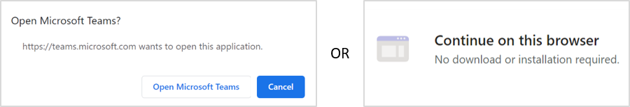

2-3 December 2020
GMI Steering Committee Meeting
Instructions for Attending Virtual Meetings
Tutorial Video
View this helpful tutorial that demonstrates how to join a Teams call.
Detailed Instructions
1. Open the meeting invite and select the online link Join Microsoft Teams Meeting.
2. If you already have Teams installed, you will be prompted to “Open Microsoft Teams.” This will launch the Windows Application. If you do not have Teams installed, you can continue using the web browser-based application. Using the web version does not require you to download or install anything.

3. You may then choose the audio and video settings that you’d like to use during the meeting. Please be sure to mute your microphone when you are not speaking.
- Option #1: Join using computer or headset audio/microphone. Before entering the meeting, make sure your audio/microphone settings are correct. Click the gear icon to adjust your settings.
- Option #2: Dial-in. The meeting invite includes a phone number and conference ID; simply dial the number to join. Please note the number in your invitation may not be local to your patient. Select Local numbers to find the number based on your location.
- Alternatively, you may select “Phone audio” on Teams and enter your phone number.